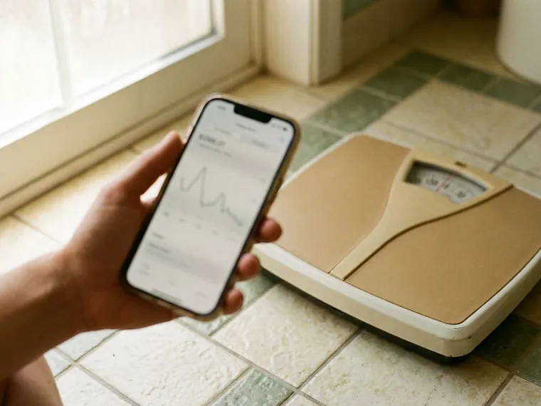

Online Weight Loss Doctor in Grove City, OH
See a licensed weight loss provider online from Grove City, OH. Answer a short questionnaire and get a medical review without an office visit.
- Licensed providers in your state
- Online intake in ten minutes
- Licensed US pharmacy shipping
- Secure messaging between visits

- Licensed Ohio Medical Providers
- Personalized Treatment Plans
- Discreet Home Delivery
- Ongoing Medical Support
Online Weight Loss Visits With a Licensed Provider in Grove City, OH
Columbus Weight Loss assigns each intake to a licensed Oakwell MD provider. That provider may be a physician, nurse practitioner or physician assistant, licensed in your state and experienced with weight medications.
What the program includes:
- State-licensed provider review of your full health history
- Prescriptions for GLP-1 injections or pills when appropriate
- Secure messaging and scheduled check-ins with your care team

Get a licensed provider's plan in Grove City, OH.
Take the short online questionnaire and see what a provider recommends for you.
Related GLP-1 Weight Loss Options in Grove City, OH
Every GLP-1 option Columbus Weight Loss offers in Grove City, OH, from weekly injections to daily dissolving tablets, starts with the same provider review and ships to your door.



helped
Why patients choose us for Online Weight Loss Doctor in Grove City, OH
An online visit removes the drive, not the medical review. The screening questions, medication choices and safety checks match what you would get in person.
- State-licensed providers, Every provider who reviews your case is licensed in your state.
- Fast access, Most intakes are reviewed quickly, without a waitlist.
- Licensed sourcing, Prescribed medication ships from a licensed US pharmacy.
Anywhere in Grove City
There is no clinic to visit, just an online form and a provider review. People across the Grove City area get their plan by message and any prescription by mail.
Licensed care team
The Oakwell MD team includes physicians, nurse practitioners and physician assistants who are licensed in your state. They prescribe weight medicines every day and will refer you to in-person care when that is the safer path.
Safety first
Online screening covers the same contraindications as an office visit, from MEN 2 history to uncontrolled blood pressure. Your provider may ask for a blood pressure reading or labs before prescribing anything.
The care standards behind every Grove City plan
Columbus Weight Loss runs on the Oakwell MD clinical model: licensed providers, US pharmacies that meet state and federal compounding rules, and follow-up that does not stop when the package arrives. Every treatment on this site goes through the same screening throughout Grove City, OH.
How an Online Weight Loss Doctor Works in Grove City, OH
How Online Weight Loss Visits Work in Grove City
The office visit becomes a secure online intake. You answer questions about your health, weight history, medications and goals, and a licensed provider reads every answer before deciding on a plan. Video is used when needed. The plan may include medication, nutrition targets and activity goals, with follow-ups online.

Who an Online Weight Loss Doctor Is For
Busy adults who want medical support without office visits are the usual fit. Prescription medicines are generally considered for a BMI of 30 or more, or 27 or more with a weight-related condition like high blood pressure, type 2 diabetes or sleep apnea. Urgent problems need in-person care. Some complex cases are better seen in person.
Visit and Check-in Schedule in Grove City
Most people finish the intake in about ten minutes. A provider review usually follows quickly, and you may get a follow-up message or a request for a short video call depending on your state and the medication involved. Early check-ins are frequent. Stable patients often move to monthly or quarterly check-ins.
What to Expect Week by Week
Week one is review and setup. If medication is prescribed, it usually arrives within a few days, and many GLP-1 patients notice less hunger within the first week or two on the starting dose. Nausea questions come first. Over the following months, your provider reviews weight trends and adjusts doses or goals.
Treatment Side Effects
Side effects depend on the treatment prescribed. Injections mostly bring stomach symptoms around dose changes, and stimulant pills tend to cause dry mouth, trouble sleeping and a quicker pulse. Severe belly pain needs a same-day call. Because your care team is online, you can report symptoms right away.
Eligibility and Screening in Grove City
Screening covers BMI, conditions, medications, allergies and weight history. A family history of medullary thyroid cancer, uncontrolled blood pressure, an eating disorder or pregnancy each rule out specific medications. State licensing applies. Some cases get referred to an in-person clinic.
Online vs In-Person Weight Loss Doctors in Grove City
The medications are the same. Both prescribe identical medicines under the same guidelines, so the real differences are travel time and waitlists. Physical exams need an office. Your online provider can send lab orders to a nearby lab and prescribe FDA-approved medicines or compounded versions without FDA approval.

How the Online Process Works
A short questionnaire comes first. It asks about your health conditions, weight history, medications, allergies and what you want from treatment, and it takes most people about ten minutes. A licensed provider then reviews it. If prescribed, medication ships from a licensed pharmacy, and secure messaging keeps you connected between visits.
Weight Loss Doctor Near Me in Grove City, OH
Searching for a weight loss doctor near me in Grove City often leads to waitlists of several weeks. An online clinic avoids the wait. You submit your intake today, a licensed provider reviews it remotely and follow-ups happen by secure message or short video call, so care fits around work and family.
Specifics help your provider decide quickly. Have your height and weight ready, along with recent labs if you have them, a home blood pressure reading and a full list of medications, allergies and supplements. Gaps mean more messages.
Weight care runs for months, which means many appointments in person. Online, each check-in takes a few minutes, your provider adjusts the plan from wherever you are in Grove City and any medication ships to your door before you run out. Short and specific.
Is Online Weight Loss Doctor right for you?
Five quick questions, then a licensed provider reviews your answers. No commitment.
Columbus Weight Loss at a glance
- Online care for Grove City, OH and nearby
- Online visits, no office wait
- Medication shipped from licensed US pharmacies
- 4.8-star rated by 523+ Columbus-area patients
Grove City patients
- Population
- 42,782
- Visits
- Online, from anywhere in Grove City
- Delivery
- Grove City and communities nearby
- Nearby
- Columbus, Upper Arlington, Hilliard, Gahanna
Patients in Grove City, OH choose an online weight loss doctor because a state-licensed provider reviews their case quickly and follow-ups happen by message.
Grove City map
Everything we treat in Grove City, OH
Weight loss is where most patients start. The same provider-reviewed, shipped-to-you model covers peptides, sexual health, hair, sleep and longevity.


How to Get Started With an Online Weight Loss Doctor in Grove City, OH
A ten-minute questionnaire starts it, and a licensed provider takes it from there.
Answer a Few Questions
Complete a short online questionnaire about your health, history and goals. Most people finish in about ten minutes.
Meet Your Provider
A licensed provider reviews your answers and may message you or schedule a short video call. They recommend treatment only if it is clinically appropriate.
Treatment and Follow-up
If prescribed, medication ships from a licensed pharmacy. Regular check-ins and messaging keep your plan on track.
Frequently Asked Questions About Online Weight Loss Doctor in Grove City
It suits most adults with stable health. Online care works well for people who want medical weight support, are comfortable sharing health information online and do not need urgent care or close in-person monitoring for a complex condition. A provider confirms after reviewing your intake.
Yes. Your online provider handles weight care, and you can share your plan and any prescriptions with your primary care doctor so both know what you are taking and can coordinate on conditions like diabetes or blood pressure. Share your current medication list.
It depends on the treatment. GLP-1 medicines commonly cause nausea, constipation and diarrhea around dose changes, and severe belly pain, persistent vomiting or a lump in the neck need a call to your provider right away. Message your provider anytime.
Appetite usually returns if medication stops. Many people regain some weight after stopping, which is why your provider plans the transition with you instead of stopping cold. Plan the exit together.
Pricing is shown after the provider review. The figure varies with the treatment plan, the medication if any and your insurance coverage. You see the full cost before agreeing.
Yes, when appropriate. A licensed provider can prescribe Wegovy, Zepbound, oral options or compounded alternatives, which are not FDA-approved, after reviewing your history and confirming the medicine is clinically appropriate. Prescriptions go to licensed pharmacies.
Not always. Your provider may ask for an A1C, lipid panel, thyroid test or kidney function results if you have not had them in the past year, especially with diabetes or kidney concerns. Photos of lab reports work.
You still get a plan. The provider tells you why and offers next steps, which could be bloodwork, a habit-focused plan or a referral to in-person care. New labs can change it.
What patients say about Columbus Weight Loss
Daniel K.
Came for recovery after a shoulder injury, stayed for how thorough the screening was. They asked for labs, explained what BPC-157 can and cannot do, and never oversold it.
Peptide Therapy · Grove City, OHAngela W.
One tablet a day instead of three products. Six months in the thinning at my part has filled in noticeably and the check-ins kept me consistent.
Hair Growth · Dublin, OHEmily R.
I had tried everything short of surgery. The questionnaire took five minutes, a real provider messaged me the next morning, and the step-up schedule kept the nausea manageable. Four months in and I feel like myself again.
Semaglutide Injections · Hilliard, OHPriya S.
I will never do needles, so the dissolving tablet was the only reason I tried this. Easy morning routine, discreet packaging, and the care team explained every step before I paid anything.
Semaglutide Pills · Reynoldsburg, OHLaura S.
Honest from the start. The provider told me which option fit my history and why, and when I hit a plateau they changed the plan instead of just raising the dose. Felt like real medicine, not a subscription.
GLP-1 Weight Loss · Dublin, OHMarcus T.
What sold me was that they did not just mail a kit. My provider adjusted my dose twice based on how I was feeling and actually answered my messages. Down more than I expected and my blood pressure is finally normal.
Tirzepatide Injections · Reynoldsburg, OHReviews reflect individual experiences. Results vary and treatment is prescribed only when clinically appropriate.
Areas We Serve Near Grove City, OH
Important safety information. GLP-1 medications (semaglutide, tirzepatide) are not for everyone. Do not use them if you or a family member have had medullary thyroid carcinoma or Multiple Endocrine Neoplasia syndrome type 2, if you are pregnant or breastfeeding, or if you have a history of pancreatitis without discussing it with your provider. Common side effects include nausea, constipation, diarrhea and reduced appetite. Compounded medications are prepared by licensed pharmacies and are not FDA-approved. A licensed provider decides whether any treatment is appropriate for you.